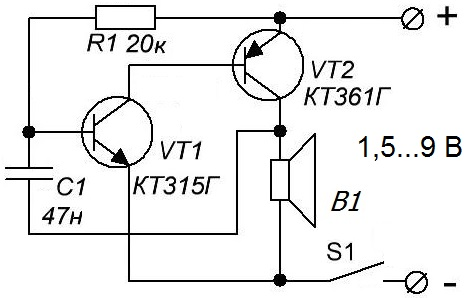
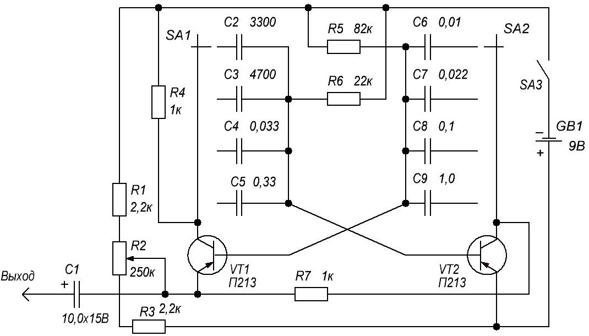
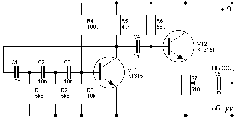
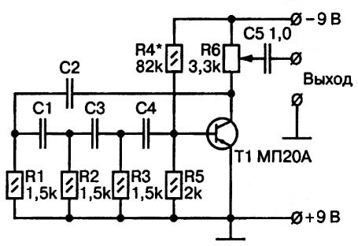
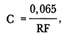
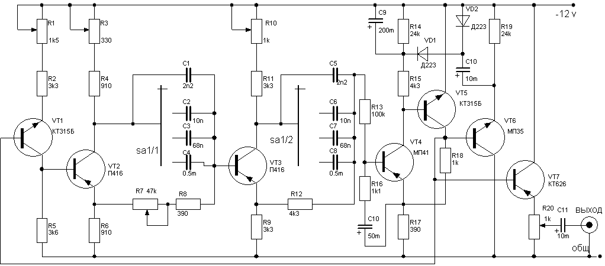

Генератор звуковых частот на транзисторах
Генератор звуковых частот – это устройство или узел электрической цепи, отвечающий за создание и воспроизведение звуковых колебаний. Нормальный человек может слышать колебания в диапазоне частот от 16 Гц и до 20 кГц. Звук до 16 Гц называют инфразвуком, а звук более 20 000 Гц - ультразвуком.
Где может пригодиться такое устройство:
- Простой электрический дверной звонок (при замыкании контактов вынесенной удаленно кнопки происходит оповещение звуком о посетителях);
- Сигнализации (при срабатывании системы безопасности включается блок звукового оповещения);
- Формирование определенного тембра звука в звуковой аппаратуре;
- Отпугивание насекомых/птиц (при излучении звуковых колебаний в определенных частотах);
- В другой профессиональной технике (проверка низкочастотных цепей, тестирование деталей на дефекты и другие цели, основывающиеся на свойствах звуковых волн).
Генератор звука

Таблица 1
| Обозначение | Наименование | Номинал | Примечание |
|---|---|---|---|
| С1 | Конденсатор электролитический | 47 нФ | можно заменить конденсатором емкостью в диапазоне 10-100 нФ |
| В1 | Динамическая головка | ||
| R1 | Резистор постоянный | 20 кОм/0,25 Вт | можно заменить подстроечным с номиналом в диапазоне 100-200 кОм |
| S1 | Выключатель | ||
| VT1 | Транзистор биполярный | КТ315Г | |
| VT2 | Транзистор биполярный | КТ361Г |
Частоту звука можно менять, меняя значение резистора или конденсатора. Также частота увеличивается, если повышать напряжение питания. При 1,5 В частота будет ниже, чем при 5 В.
Генератор звука с дискретным изменением частоты
Для более точной настройки аппаратуры или в качестве источника стандартных импульсов можно предложить собрать несложную схему генератора прямоугольных импульсов на фиксированных частотах. Такой генератор (рис. 1) представляет собой мультивибратор с последовательным включением транзисторов Т1 и Т2 (оба транзистора типа П13—П15). Такая схема проста и по сравнению со схемой симметричного мультивибратора позволяет получать лучшую форму выходного напряжения, приближающуюся к идеальному прямоугольнику.

Рис. 1 - Схема звукового генератора фиксированных частот
Длительность генерируемых импульсов составляет половину периода повторения. Выходное напряжение генератора — порядка 5 В. При помощи переключателя SA1 — SA2 можно выбрать любую из четырех фиксированных частот следования выходных импульсов: 100 Гц, 1 кГц, 5 кГц и 10 кГц. Можно получить и другие частоты следования импульсов, которые отличаются от указанных, фиксированных. Для этого необходимо изменить емкости конденсаторов C1—С4 и С6—С9.
Длительность генерируемых импульсов может изменяться в небольших пределах при помощи регулируемого резистора R2. Питание генератора производится от батареи типа «Крона» — порядка 9 в. Монтируется генератор в небольшом металлическом корпусе. На верхней панели укрепляются: переключатель фиксированных частот на четыре положения (100 Гц, 1 кГц, 5 кГц, 10 кГц), потенциометр R2 и выключатель питания SA3. Здесь же устанавливаются две клеммы для подключения соединительного кабеля, идущего к настраиваемому прибору.
Генератор звука на 1 кГц

Рис. 2 - Генератор звука на 1 кГц
Как видно из схемы (рис. 2), генератор представляет собой каскад усиления, охваченный положительной обратной связью. Частота генерации определяется номиналами конденсаторов С1-С3 и резисторов R1-R3. При указанных номиналах частота генерации равна примерно 1 кГц. Транзистор, используемый в этой схеме, должен обладать достаточно высоким статическим коэффициентом передачи тока базы - не менее 100-150.
Синусоидальное напряжение снимается с коллекторной нагрузки транзистора. Для уменьшения выходного сопротивления генератора применен эмиттерный повторитель на транзисторе VТ2. Этот каскад согласует низкое сопротивление нагрузки с довольно высоким выходным сопротивление генератора. При помощи переменного резистора R7 можно устанавливать уровень выходного сигнала генератора. Питание генератора можно осуществлять от батареи типа "Крона", либо от сетевого источника.
В генераторе помимо указанных можно применить транзисторы типа КТ3102, а при перемене полярности источника питания - КТ3107, КТ361Г... Особо следует подойти к выбору типа конденсаторов в фазосдвигающей цепи - здесь лучше применить пленочные (типа К73...) конденсаторы с невысоким отклонением от номинала (не более 5 %).
Печатную плату в такой простой конструкции разрабатывать нецелесообразно - весь монтаж можно выполнить на кусочке универсальной макетной платы.
Конструктивно генератор можно выполнить в небольшой коробке. На лицевую панель выводится выключатель питания, ось переменного резистора и выходные гнезда.
Правильно собранный из исправных деталей генератор, как правило, налаживания не требует. Полезно проверить при помощи частотомера частоту генерации и, если нужно, - подкорректировать ее, изменяя в небольших пределах номинал резистора R3.
Простой RC-генератор

Рис. 3 - Схема простого RC-генератора
Генератор собран всего на одном транзисторе с минимальным числом компонентов. Его можно использовать в качестве сигнализатора, если к форме генерируемых им колебаний не предъявляется строгих требований.
Транзистор выполняет функции усилителя звуковой частоты по схеме с общим эмиттером и резистором нагрузки в цепи коллектора (R6), но с его коллектора усиленный сигнал подается в цепь базы через трехзвенный частотный фильтр, состоящий из резисторов R1, R2, R3, R5 и конденсаторов С1, СЗ, С4. Благодаря этому фильтру на определенной частоте осуществляется сдвиг фазы сигнала, необходимый для выполнения условий генерации, а эта обратная связь становится положительной.
Конденсатор С2 - разделительный, а резистором R4 устанавливается рабочий режим базы. С помощью переменного резистора R6 можно изменять уровень выходного сигнала. Емкости конденсаторов частотного фильтра для получения определенной частоты генерации можно определить по следующей формуле:

где:
С - емкость конденсаторов CI = С2 = СЗ = С4 в фарадах;
R - сопротивления резисторов Rl = R2 = R3 в омах;
F - частота генерируемых колебаний в герцах.
Генератор с регулировкой частоты
Если вам нужна возможность регулировки звуковых частот в заданном диапазоне, то возможно, вам пригодится схема на рисунке 4.

Рис. 4 - Схема генератора с регулировкой частоты
Генератор имеет следующие параметры:
Диапазон частот (разбит на 4 поддиапазона) - 18 Гц - 32 кГц,
- 18 - 160 Гц;
- 140 - 1100 Гц;
- 0,9 - 6,5 кГц;
- 5,2 - 32 кГц.
То есть охватывается весь слышимый человеческим ухом спектр.
Уровень выходного напряжения - 0,5 В,
Коэффициент гармоник - менее 1 %,
Неравномерность выходного напряжения - менее 2%.
Обычно в генераторах синусоидальных колебаний для перестройки по частоте используются сдвоенные переменные резисторы. Для получения минимальных искажений необходимо использовать прецизионные блоки резисторов, которые весьма дефицитны и дорогостоящие.
В данном генераторе для перестройки по частоте использован одиночный переменный резистор, что упрощает и удешевляет конструкцию.
Несмотря на кажущуюся громоздкость схемы, генератор имеет очень высокую повторяемость и легко настраивается.
В конструкции применены транзисторы с β не ниже 40.
Настройка конструкции: резистором R1 устанавливаем амплитуду колебаний на выходе равной 0,5 В, затем подстроечными резисторами R3 и R9 добиваемся получения минимальных искажений.
Источники
radioradar.net - Схема звукового генератора на транзисторах
radiocon-net.narod.ru - САМОДЕЛЬНЫЕ ГЕНЕРАТОРЫ ЗВУКОВОЙ ЧАСТОТЫ
s-led.ru - Схема простого RC-генератора
niarium.ru - Приборы для настройки усилителей низкой частоты